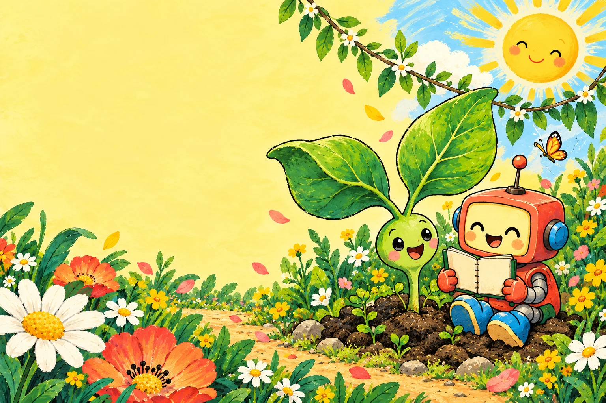

Save this page or print it before leaving the internet. The full interactive site needs a browser and a local web server or hosted connection.
Year 4 · Unit 4 · Flexible timing · Work alone or talk with a partner.

A plant stays rooted in the ground. How does it get food? Say or write your first idea.
Photosynthesis is how green plants make their own food. Chlorophyll, a green substance in leaves, absorbs energy from sunlight. Roots take in water. Carbon dioxide from the air enters leaves. The plant makes glucose and releases oxygen. Some glucose becomes stored starch.
Water + carbon dioxide → glucose + oxygen
Light energy absorbed by chlorophyll makes this process possible.
Plants provide food for living things and oxygen for breathing. They also use carbon dioxide. Plants respire in both day and night.
In our simple model, food can be made only when all four needs are present. Predict the outcome for each trial; ask a partner to check your reasoning.
| Trial | Your prediction | Explain why |
|---|---|---|
| All four needs present | ||
| Same conditions, no sunlight | ||
| Same conditions, no water |
This is a model, not a real experiment. Real plant growth takes time.
Draw a path of channels from a spring to the roots of a plant. Place three stones in the way. Find a new route around them. Ask a partner to trace your route.
Explain: what do roots absorb? Why is water not the same as food?
A fictional AI helper says: “Plants eat food from soil. Water is all they need.” Compare this with your Year 4 textbook, pages 76–78, and the evidence below.
NASA Science evidence, paraphrased: plants use water, carbon dioxide and sunlight to make food, releasing oxygen.
Source: science.nasa.gov/kids/earth/what-is-the-carbon-cycle/
Repair the claim in your own words. Explain which sources helped.
Cover the private details in this made-up message: “My full name is Alex Example. I live at 12 Imaginary Road. My password is Leaf123. What do plants need for photosynthesis?”
1. Plants make their own food; photosynthesis. 2. Sunlight, water, carbon dioxide and chlorophyll. 3. Sunlight. 4. Water: roots; carbon dioxide: leaves. 5. Green substance that absorbs sunlight. 6. Starch and oxygen; the textbook explains that glucose can be stored as starch. 7. Needs: water and carbon dioxide; products: starch and oxygen. 8. Plant → caterpillar → bird: food made in plants supports animals. 9. Carbon dioxide enters; oxygen leaves. This helps maintain gas balance and supplies oxygen for breathing. 10. Food, oxygen for breathing, and the balance of gases in the air. Discuss reasons, give feedback and allow corrections. These are practice tasks, not an official performance-level grade.
I used to think… Now I know…
Share your idea aloud if you prefer. With an adult, observe two plants in different light. Do not damage the plants.
Original learning trail created with AI assistance; teacher verification required. Science based on the supplied Science Year 4 textbook, Unit 4, pp. 76–81. No personal details are needed.